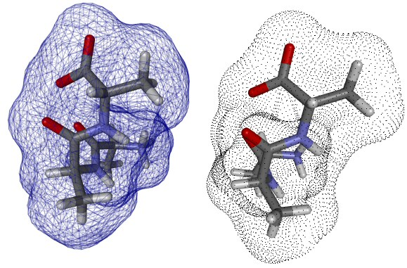

< Index >
DisplayProperties This is the main dialog for creating and modifiying Representations. It can be opened by either
Model SettingsThe left side of the dialog contains all control elements for the model settings.ModelsIn the upper left side the user can select the model. Currently BALLView provides the following models:
Resolution
Every model can be created in at least three different resolutions to comply with vastly different graphic performances of todays computers.
Try setting the detail level to "low" if the graphics are bucking while rotating the view.
The detail level of all surfaces can be set in smaller steps by using the according slider below.
The image below shows a Ball and Stick model in the three different detail levels.  Drawing ModeBALLView provides three drawing modes: solid, wireframe and dots. Hint: For images like above try the wireframe modus for surfaces with a resolution below 3.5 and with a transparency around 80%. Coloring SettingsColoring MethodBALLView has ten different coloring methods available:
|